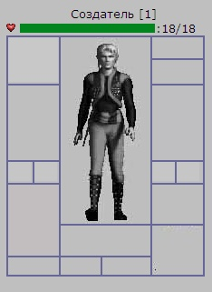
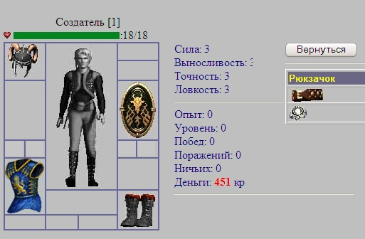
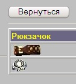

Инвентарь в нашей онлайн игре - это рюкзак
персонажа, где могут содержаться какие-либо вещи. Как Вы уже знаете, активные
предметы в нашей игре, могут находится в одном из нескольких состояний - быть в
слотах игрока (предметы надеты на игроке), лежать у него в рюкзаке и содержаться
на полке комиссионного магазина.
Слоты нашего с Вами персонажа
используются для надевания различных предметов.

Слева от героя сверху вниз размещены такие слоты:
1. Слот для шлемов и головных уборов
2. Слот для различного рода оружия
3. Два слота для колец
4. Слот для рубашек или брони.
5. Слот для пояса
Справа от героя сверху вниз размещены следующие слоты:
6. Слот для сережек
7. Слот для кулонов или колье
8. Слот для щита
9. Еще два слота для колец
10. Слот для перчаток
11. Слот для обуви
Три слота, которые находятся внизу игрока мы рассмотрим в других уроках.
Как Вы помните из Урока 4, предметы в справочнике предметов описывались таким
образом:
INSERT INTO
Items_List (IL_ID,ItemType,ItemNo,ItemName,Item_StateCost,Item_Image,
ItemSlotName,Item_Level,Item_FullLife) VALUES(1,1,1,'Молот Новичка',20,'mace.jpg','Weapon',1,20);
INSERT INTO Items_List (IL_ID,ItemType,ItemNo,ItemName,Item_StateCost,Item_Image,
ItemSlotName,Item_Level,Item_FullLife) VALUES(5,4,1,'Перчатки
кузнеца',15,'gloves.jpg','Gloves',1,20);
где поле
ItemSlotName - как раз и отвечало за слот, в
котором может размещаться данный тип предмета. Так для Молота Новичка
слотом размещения является - Weapon, для Перчаток
кузнеца - Gloves. Это поле понадобится
нам, когда мы начнем реализовывать одевание/раздевание нашего героя в 4 пункте
нашего сегодняшнего урока.
В прошлом уроке, мы добавили немного предметов одному из
автоматически созданных нами персонажей - "Создателю" . Вот они:
INSERT INTO Items (IT_ID,IL_ID,Item_Owner,Item_Position,Item_CurrentLife)
VALUES(1,9,1,2,0);
INSERT INTO Items (IT_ID,IL_ID,Item_Owner,Item_Position,Item_CurrentLife)
VALUES(2,10,1,2,12);
INSERT INTO Items (IT_ID,IL_ID,Item_Owner,Item_Position,Item_CurrentLife)
VALUES(3,3,1,2,15);
Поле
Item_Position = 2
указывает на то, что все эти
предметы находятся у нас в рюкзаке. Давайте создадим файлinventory.phtml, в котором мы
попробуем реализовать отображение, лежащих в рюкзаке предметов.
Для начала в файле char.phtml
добавьте кнопку чтоб мы
попасть на страницу inventory.phtml
. Вот это описание кнопки:
В нашем SQL-запросе мы
отбираем только те предметы которые удовлетворяют двум условиям
Item_Owner =
$aUserID,
то есть предмет имеет идентификатор владельца такой же как USER_ID нашего героя и
Item_Position='2'
- что означает: предмет лежит у нас в рюкзаке. Таблица предметов соединяется со
справочником предметов (inner
join), откуда мы узнаем их
дополнительные характеристики (в частности -
ItemName). $aUserID
мы узнаем чуть выше:
$query = "SELECT
* FROM users WHERE Nick_Name='$aNickName'";
$result = mysql_query($query) or
die("Query failed : " .
mysql_error());
$aRow = mysql_fetch_array( $result);
$aUserID = $aRow["USER_ID"];
...
Теперь нам остается только реализовать возможность надевать
предметы в слоты игрока и возвращать их обратно в рюкзак.
Для начала немного видоизменим строку кода на
PHP для отображения предметов в
ссылку (<a href>)которая будет приводить к передаче параметра
seton=<$aSlotItemID>
вновь на нашу же страницу
inventory.phtmlдля перемещения
предмета в соответствующий слот.
Теперь, кликая на
картинке предмета, игрок вызовет переход по ссылке в этот же файл с передачей в
него параметров (seton,
atype,
ano
) то есть идентификатора
предмета из таблицы предметов, тип предмета и порядковый номер предмета из
справочника предметов.
Чтоб проанализировать значения этих передаваемых параметров, воспользуемся
следующим кодом на
PHP:
if (!empty($_GET['seton']))
{ // Вошли после режима одевания предмета $seton = $_GET['seton']; $aItemType = $_GET['atype']; $aItemNo = $_GET['ano'];
}
else
{ $seton = 0;
}
Теперь, когда эти
переданные параметры стали для нас известны, можно осуществлять перенос предмета
из рюкзака в соответствующий слот персонажа. Реализуем это следующим образом:
// Надеваем предмет с идентификатором в переменной
seton в слот
if( $seton != 0 ){
// Убираем из рюкзака - перемещаем в слоты
$query = "UPDATE Items SET Item_Position='3'
WHERE IT_ID='$seton'";
$result = mysql_query($query) or die("Query failed : " . mysql_error());
// В какой слот ? из справочника предметов
$query = "SELECT * FROM Items_List WHERE
ItemType='$aItemType' and ItemNo='$aItemNo'";
$result = mysql_query($query) or die("Query failed : " . mysql_error());
$aRow = mysql_fetch_array( $result);
$aItemSlot = $aRow["ItemSlotName"]."_Slot";
if ($aItemSlot == 'Ring_Slot'){
// Пытаемся засунуть в пустой слот, либо, если все
заняты - тогда в первый
$query = "SELECT * FROM users WHERE
Nick_Name='$aNickName'";
$result = mysql_query($query) or die("Query failed : " . mysql_error());
$aRow = mysql_fetch_array( $result);
$aRing1_Slot = $aRow["Ring1_Slot"];
$aRing2_Slot = $aRow["Ring2_Slot"];
$aRing3_Slot = $aRow["Ring3_Slot"];
$aRing4_Slot = $aRow["Ring4_Slot"];
$NotEmpty = false;
if ($aRing1_Slot == 0){
$query = "UPDATE Users SET Ring1_Slot='$seton'
WHERE Nick_Name='$aNickName'";
$result = mysql_query($query) or die("Query failed : " . mysql_error());
$NotEmpty = true;
}
if (($aRing2_Slot == 0) && (!$NotEmpty) ){
$query = "UPDATE Users SET Ring2_Slot='$seton'
WHERE Nick_Name='$aNickName'";
$result = mysql_query($query) or die("Query failed : " . mysql_error());
$NotEmpty = true;
}
if (($aRing3_Slot == 0) && (!$NotEmpty) ){
$query = "UPDATE Users SET Ring3_Slot='$seton'
WHERE Nick_Name='$aNickName'";
$result = mysql_query($query) or die("Query failed : " . mysql_error());
$NotEmpty = true;
}
if (($aRing4_Slot == 0) && (!$NotEmpty) ){
$query = "UPDATE Users SET Ring4_Slot='$seton'
WHERE Nick_Name='$aNickName'";
$result = mysql_query($query) or die("Query failed : " . mysql_error());
$NotEmpty = true;
}
if (!$NotEmpty){ // Если все слоты под кольца
заняты - засовываем в первый
// сперва снимем первое кольцо
$query = "UPDATE Items SET Item_Position='2'
WHERE ID='$aRing1_Slot'";
$result = mysql_query($query) or die("Query failed : " . mysql_error());
// засунем из рюкзака
$query = "UPDATE Users SET Ring1_Slot='$seton'
WHERE Nick_Name='$aNickName'";
$result = mysql_query($query) or die("Query failed : " . mysql_error());
$NotEmpty = true;
}
// сперва снимем если что-то есть?
$link_slot_var = "a".$aItemSlot;
$aSlotItemID = $$link_slot_var;
if ($aSlotItemID <> 0){
$query = "UPDATE Items SET Item_Position='2' WHERE
IT_ID='$aSlotItemID'";
$result = mysql_query($query) or die("Query failed : " . mysql_error());
}
$query = "UPDATE Users SET ".$aItemSlot."='$seton'
WHERE Nick_Name='$aNickName'";
$result = mysql_query($query) or die("Query failed : " . mysql_error());
}
}
Надо
заметить, что у нас несколько отличается работа с предметами типа "кольцо" и
остальными вещами. Остальные вещи имеют единственный четко прописанный слот, в
который они могут быть помещены. Шлем в
"Helmet", Рубашка в
"Armor", Щит в
"Shield" и т.д. Слотов же для
колец у нас четыре и в них - как могут находится кольца, так эти слоты и могут
пустовать.
Как видно из приведенного выше кода, при одевании предмета
типа "кольцо" сперва последовательно проверяется - свободны ли слоты. Кольцо
надевается в первый из свободных слотов. Если все занято - снимается первое
кольцо (поле
Ring1_Slot) и
возвращается в рюкзак, на его место одевается кольцо из рюкзака.
Что касается остальных предметов экипировки и оружия,
то там все просто - если слот свободен - сразу одеваем, если занят - сперва
снимаем в рюкзак, ранее одетый в слот предмет.
В таблице
Itemsмы модифицируем
поле
Item_Position
меняя его на 3, если предмет
одевается в слот, либо на 2, если предмет возвращается в рюкзак. В таблице
Usersмы модифицируем
поля
Helmet_Slot,
Shield_Slot,
Weapon_Slot и т.д.
Отображение одетых предметов осуществим следующим
скриптом:
// Теперь смотрим героя во всей красе
$query = "SELECT * FROM users WHERE Nick_Name='$aNickName'";
$result = mysql_query($query) or die("Query failed : " . mysql_error());
$aRow = mysql_fetch_array( $result);
// Эта функция получает переменную из слота
// и если не 0 ищет этот предмет в таблице предметов
// затем по типу и номеру предмета-ищет картинку в справочнике
предметов function DrawItem($aSlot){
global $aNickName,$aHelmet_Slot,$aShield_Slot,$aWeapon_Slot,$aGloves_Slot,
$aShoes_Slot,$aArmor_Slot;
global $aNecklace_Slot,$aRing1_Slot,$aRing2_Slot,$aRing3_Slot,$aRing4_Slot,
$aEar_Slot,$aBelt_Slot;
global $mysql_host,$mysql_user,$mysql_password,$my_database;
$link_slot_var = "a".$aSlot."_Slot";
$aSlotItemID = $$link_slot_var;
if ( $aSlotItemID != 0 ){
// сперва выберем предмет из таблицы предметов
$query = "SELECT i.Item_Position, il.ItemType, il.ItemNo, il.Item_Image,
il.ItemName FROM Items i inner join Items_List il on il.il_id=i.il_id
WHERE IT_ID='$aSlotItemID'";
$result = mysql_query($query) or die("Query failed : " . mysql_error());
$aRow = mysql_fetch_array( $result );
$aItemType = $aRow["ItemType"];
$aItemNo = $aRow["ItemNo"];
$aItemPos = $aRow["Item_Position"];
$aItemImage = $aRow["Item_Image"];
$aItemName = $aRow["ItemName"];
Как Вы догадались, сперва мы читаем содержимое слотов из таблицы
users. Затем нам
понадобится функция
DrawItem, которая
займется непосредственным выводом картинок предметов на страничку. Более тог, мы
должны реализовать снятие предмета по нажатию на его картинку. Это достигается
созданием ссылки типа
(<a href='inventory.phtml?NickName=".$aNickName."&setoff=".$aSlotItemID."&atype=".$aItemType."
&ano=".$aItemNo."&aslot=".$aSlot."'><imgborder=0 src=Items/".$aItemImage." ALT='Снять
предмет $aItemName'></a>),
по которой переходит игрок, намеревающийся вернуть ненужный предмет из слота в
рюкзак
Параметр
&setoff указывает
нашему скрипту, что будет инициирован режим снятия предмета.
Наш герой с несколькими предметами, одетыми в слоты будет выглядеть
так:

Перед снятием предмета, мы проверяем переданный параметр
&setoff
if (!empty($_GET['setoff']))
{
// Вошли после режима снятия предмета
$setoff = $_GET['setoff'];
$aItemType = $_GET['atype'];
$aItemNo = $_GET['ano'];
$aSlot = $_GET['aslot'];
}
else
{
$setoff = 0;
}
И производим перенос предмета из слота в рюкзак:
// Уберем предмет с идентификатором в переменной
setoff в рюкзак
if( $setoff != 0 ){
$query = "UPDATE Items SET Item_Position='2' WHERE
IT_ID='$setoff'";
$result = mysql_query($query) or
die("Query failed : " .
mysql_error());
$aSlot = $aSlot."_Slot";
// Очищаем слот
$query = "UPDATE Users SET ".$aSlot."='0' WHERE
Nick_Name='$aNickName'";
$result = mysql_query($query) or
die("Query failed : " .
mysql_error());
}
Полный текст программы из файла
inventory.phtml Вы найдете
здесь.
Во избежание одевания предметов старших уровней
(так персонаж первого уровня не может одеть броню рассчитанную на игроков более
старших уровней), мы сделаем небольшую проверку при попытке одеть предмет.
Давайте сделаем несколько предметов, которые лежат в рюкзаке нашего
героя предназначенными для второго уровня:
INSERT INTO Items_List (IL_ID,ItemType,ItemNo,ItemName,Item_StateCost,Item_Image,
ItemSlotName,Item_Level,Item_FullLife)
VALUES(9,8,1,'Пояс отваги',10,'belt.jpg','Belt',2,20);
INSERT INTO Items_List (IL_ID,ItemType,ItemNo,ItemName,Item_StateCost,Item_Image,
ItemSlotName,Item_Level,Item_FullLife)
VALUES(10,9,1,'Кольцо повелевания',15,'ring1.jpg','Ring',2,30);
Таким образом "Кольцо повелевания" и "Пояс
отваги" не должны одеваться в
слоты персонажа первого уровня, так как у них параметр
Item_Levelравен 2.
Проверку в файле
inventory.phtmlмы можем легко реализовать так:
if( $aCharLevel >= $aItem_Level ) //
проверка на уровень (level)
где
$aCharLevel - это
уровень нашего героя, а
$aItem_Level -
уровень персонажа, который может воспользоваться этим предметом.
Теперь эти предметы:

останутся в рюкзаке игрока до тех пор, пока он не повысит уровень своего героя.
Немного измененный файл inventory.phtml
Вы найдете здесь.
Что касается проверки по статам героя, то это также легко
реализовать путем сравнения полей (Item_Strength, Item_Endurance, Item_Accuracy
и т.д.) из таблицы Items_List с полями (Character_Strength,
Character_Endurance, Character_Accuracy и т.д.) из таблицы users. Вы легко можете сделать
такую проверку сами, в качестве домашнего задания.
В следующем уроке мы создадим разные локации для перемещения игрока между
ними. Более подробно остановимся на создании магазина оружия и ремонтной
мастерской для починки изношенных предметов.